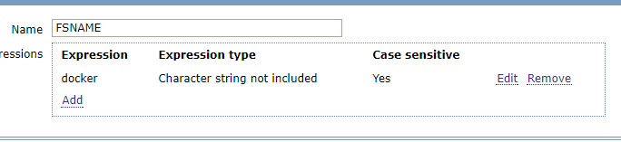
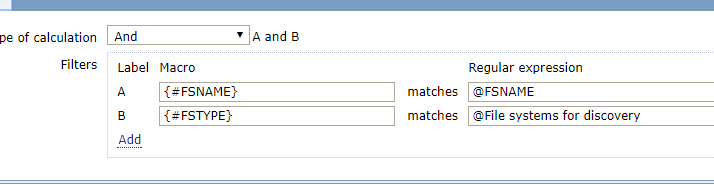
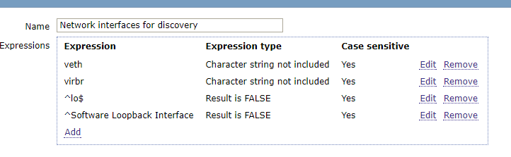
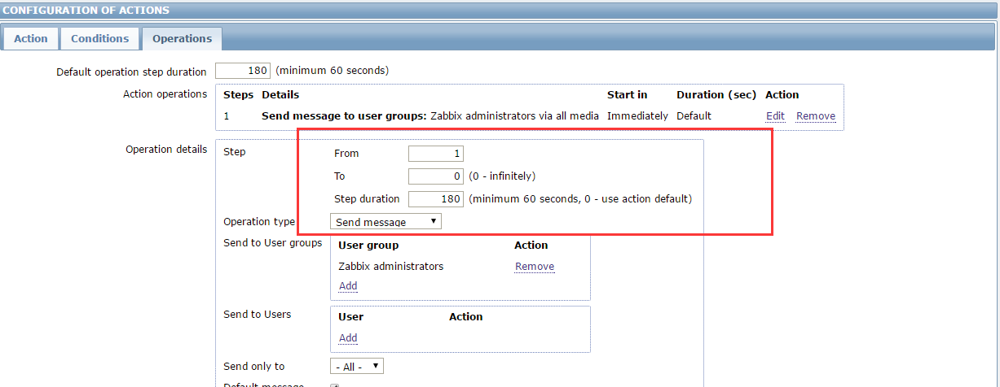

zabbix
过滤docker无用分区
zabbix自带的自动发现文件系统的LLD能够发现系统内所有的分区，但是有些机器上跑的docker分区也同时被监控到了。然而监控到docker这些分区全是not supported的，网卡类似
设置zabbix的正则 Administration --> General 右上角选择 Regular expressions 添加

修改linux Discovery list 模板

网卡的可以直接修改Network interfaces for discovery

这个正则的意思是过滤字符串不包含/var/lib/docker/devicemapper/mnt/，且区分大小。
这里需要说一下表达式5种类型：
Character string included #模糊匹配字符串
Any character string included #模糊匹配多个字符串，可以用逗号（，）,点（.）,斜杠（/）作分隔符
Character string not included #模糊不匹配字符串
Result is TRUE #精确匹配，为真
Result is FALSE #精确匹配，为假设置zabbix的正则 Administration --> General 右上角选择 Regular expressions 添加
监控mysql
使用自带的模板 在zabbix agent操作 vim /etc/zabbix/.my.cnf [mysql] host = localhost user = root password = xxx port = 3326 socket = /var/lib/mysql/mysql3326.sock [mysqladmin] host = localhost user = root password = xxxx port = 3326 socket = /var/lib/mysql/mysql3326.sock sed -i 's@/var/lib/zabbix@/etc/zabbix@g' /etc/zabbix/zabbix_agentd.d/userparameter_mysql.conf /etc/init.d/zabbix-agent restart 之后在web界面添加mysql模板 mysql主从监控 vim /etc/zabbix/zabbix_agentd.d/userparameter_mysql.conf UserParameter=mysql.replication,echo "show slave status\G;" | HOME=/etc/zabbix mysql | grep -E "Slave_IO_Running|Slave_SQL_Running" | awk '{print $$2}'| grep -c Yes zabbix_get -s 192.168.100.223 -k "mysql.replication" 如果上面返回的是2，那么是正常,代表Slave_IO_Running和Slave_SQL_Running两个状态都是Yes 其他值均不正常。 ---------------------------------------------------------- MySQL的监控有很多种方案，如果你已经使用了Zabbix作为监控系统，那么集成进来就非常合适。而且使用Zabbix监控MySQL是 比较容易的，Zabbix官方也自带了MySQL监控模板，但是生产环境推荐使用percona的监控插件。 https://www.percona.com/doc/percona-monitoring-plugins/1.1/zabbix/index.html 下面让我们动手来完成添加一台MySQL数据库的监控工作。 1.安装percona仓库 # rpm -ivh http://www.percona.com/downloads/percona-release/redhat/0.1-3/percona-release-0.1-3.noarch.rpm 2.部署监控环境 percona的监控插件是php编写的。通过php连接mysql来获取相关的数据，所以需要你在本地安装zabbix agent的同时，部署php和php-mysql。 [root@linux-node1 ~]# yum install zabbix22-agentphp php-mysql 3.安装percona的zabbix模版 [root@linux-node1 ~]# yum install -ypercona-zabbix-templates [root@linux-node1 ~]# rpm -qlpercona-zabbix-templates /var/lib/zabbix/percona /var/lib/zabbix/percona/scripts /var/lib/zabbix/percona/scripts/get_mysql_stats_wrapper.sh /var/lib/zabbix/percona/scripts/ss_get_mysql_stats.php /var/lib/zabbix/percona/templates /var/lib/zabbix/percona/templates/userparameter_percona_mysql.conf /var/lib/zabbix/percona/templates/zabbix_agent_template_percona_mysql_server_ht_2.0.9-sver1.1.6.xml 可以看到他的组成部分有一个shell脚本，一个php脚本，一个zabbix的配置文件，和一个Zabbix 模版的xml。下面我们需要引用 配置文件，并在Zabbix上来导入该模版。 # vim /etc/zabbix_agentd.conf Include=/etc/zabbix_agentd.conf.d/ # mkdir/etc/zabbix_agentd.conf.d/ 4.复制用户自定义配置项到Zabbix配置目录 # cp /var/lib/zabbix/percona/templates/userparameter_percona_mysql.conf /etc/zabbix_agentd.conf.d/ 5.让PHP可以连接到MySQL上 # vim /var/lib/zabbix/percona/scripts/ss_get_mysql_stats.php.cnf <?php $mysql_user = 'root'; $mysql_pass = 's3cret'; //设置为你mysql的相关用户名和密码。 6.测试监控脚本 # /var/lib/zabbix/percona/scripts/get_mysql_stats_wrapper.sh gg 7.修改监控脚本 默认情况下，监控MySQL主从的，直接是硬编码在get_mysql_stats_wrapper.sh中。如果你的mysql安装路径或者socket不同，需 要手动修改下才可以使用。如果是从库，测试，返回1，证明该脚本正常。 # /var/lib/zabbix/percona/scripts/get_mysql_stats_wrapper.sh running-slave 1 8.导入zabbix模版 将/var/lib/zabbix/percona/templates/zabbix_agent_template_percona_mysql_server_ht_2.0.9-sver1.1.6.xml下载到本 地，然后在zabbix上导入 Configuration -> Templates -> Import 下面你就可以给你的MySQL数据库指定监控模板了，由于篇幅原因就不在截图，相信这难不倒你！ 生产环境的注意事项 MySQL监控用户授权 在我们监控MySQL的时候，需要连接到MySQL数据库，但是在进行用户授权的时候，要遵循权限最小化的原则，分配最简单够用的权限即 可，下面是我给生产MySQL的监控用户授权。 mysql> grant select,process,replicationclient on *.* to monitor@'192.168.1.11' identified by 'monitor@xx'; mysql> flush privileges; process通过这个权限，用户可以执行SHOWPROCESSLIST和KILL命令。默认情况下，每个用户都可以执行SHOW PROCESSLIST命令，但 是只能查询本用户的进程。 replication client拥有此权限可以查询master server、slave server状态。 彻底清除MySQL Slave信息 在生产环境，MySQL Master和Slave进行主从切换的时候，Slave成功升级为主库，那么这个时候就需要彻底清理从库的信息，不然监 控系统会认为这台服务器是Slave，而且会报主从同步失败。 其实非常的简单，只需要以下两步： stop slave; reset slave all; RESET SLAVE ALL是清除从库的同步复制信息、包括连接信息和二进制文件名、位置。 从库上执行这个命令后，使用show slave status将不会有输出。
监控mongo
1、配置zabbix自定义用户key vim /usr/local/zabbix/etc/zabbix_agentd.conf UserParameter=MongoDB.Status[*],/bin/echo "db.serverStatus().$1" | /usr/local/mongodb/bin/mongo admin | grep "\<$2\>"| awk -F : '{print $$2}'|awk -F , '{print $$1}' db.serverStatus().$1的结果为1行时（兼容上面的） MongoDB.Status[*],/bin/echo "db.serverStatus().$1" | /usr/local/mongodb/bin/mongo admin --port 10040 -u admin -p 'f8hIXm3g?' | grep "\<$2\>" | sed 's/,/\n/g' |grep "\<$2\>"| awk -F : '{print $$2}'|awk -F , '{print $$1}' 上面是通过db.serverStatus()来获取服务器状态 其中$1表示第一个参数 grep $2的时候要加上锚地符 "\<" 和 "\>"，因为有的对象名可能部分相同 echo "db.serverStatus()" |/usr/local/mongodb/bin/mongo --port 10040 --quiet { "host" : "TENCENT64.site", --server的hostname "version" : "2.0.5", --mongo版本 "process" : "mongod", --进程名 "uptime" : 1238418, --启动时间（单位：S） "uptimeEstimate" : 1230730, --基于MongoDB内部粗粒度定时器的运行时间 "localTime" : ISODate("2012-09-14T09:09:52.657Z"), --server的本地时间 "globalLock" : { "totalTime" : 1238418105923, --全局锁创建的时间（单位：ms 微秒） "lockTime" : 75055831911, --全局锁保持的时间（单位：ms 微秒） "ratio" : 0.06060621332329477, --lockTime和totalTime的比 "currentQueue" : { "total" : 0, --等待全局锁的队列中操作数目 "readers" : 0, --等待读锁的队列中操作数目 "writers" : 0 --等待写锁的队列中操作数目 }, "activeClients" : { "total" : 1, --连接到server的当前活动client数目 "readers" : 1, --执行读操作的当前活动client数目 "writers" : 0 --执行写操作的当前活动client数目 } }, "mem" : { "bits" : 64, --64位机器 "resident" : 18363, --占用物理内存量。 "virtual" : 478810, --占用的虚拟内存量 "supported" : true, --是否支持扩展内存 "mapped" : 233311, --映射到内存的数据文件大小，很接近于你的所有数据库大小。 "mappedWithJournal" : 466622, "note" : "virtual minus mapped is large. could indicate a memory leak" }, "connections" : { "current" : 737, --当前活动连接量。连接到server的当前活跃连接数目 "available" : 82 --剩余空闲连接量。剩余的可用连接数目 }, "extra_info" : { "note" : "fields vary by platform", "heap_usage_bytes" : 3838448, --此过程中所有的堆字节数目。仅适用于Linux "page_faults" : 31058356 --此过程中访问内存中页面失败的总次数。仅适用于Linux }, "indexCounters" : { "btree" : { "accesses" : 68229146, --Btree索引的访问次数（索引被访问量） "hits" : 68229146, --内存中的Btree页的数目。（索引命中量） "misses" : 0, --内存中不存在的Btree也数目。（索引偏差量）（索引内存访问失败次数） "resets" : 0, --索引计数器被重置为0的次数 "missRatio" : 0 --索引偏差率（未命中率） } }, "backgroundFlushing" : { "flushes" : 20640, --数据库刷新写到磁盘的次数 "total_ms" : 2453287, --数据库刷新数据到磁盘花费的微秒数 "average_ms" : 118.8608042635659, --执行单次刷新花费的平均微秒数 "last_ms" : 1, --最后一次执行完成刷新数据到磁盘花费的微秒数 "last_finished" : ISODate("2012-09-14T09:09:35.656Z") --当最后一次刷新数据完成时的时间戳 }, "cursors" : { "totalOpen" : 0, --server为client保持的游标（cursor）总数 "clientCursors_size" : 0, -- "timedOut" : 24 --server启动以来游标（cursor）超时的总数 }, "network" : { "bytesIn" : NumberLong("1929833164782"), --发送到数据库的数据总量（bytes） "bytesOut" : 553137147925, --数据库发出的数据总量（bytes） "numRequests" : 2475184328 --发送到数据库的请求量 }, "opcounters" : { "insert" : 687531883, --server启动以来总的insert数据量 "query" : 711010343, --server启动以来总的query数据量 "update" : 0, --server启动以来总的update数据量 "delete" : 0, --server启动以来总的delete数据量 "getmore" : 6484, --server启动以来调用任何游标的getMore总次数 "command" : 1287537 --server启动以来执行其他命令的总次数 }, "asserts" : { "regular" : 0, --server启动以来抛出正规断言（assert 类似于异常处理的形式）总数目 "warning" : 1, --server启动以来抛出的告警总数目 "msg" : 0, --消息断言数目。服务器内部定义的良好字符串错误 "user" : 4, --用户断言数目。用户产生的错误，譬如：磁盘空间满；重复键。 "rollovers" : 0 --server启动以来，assert counters have rolled over的次数 }, "writeBacksQueued" : false, --是否有从mongos执行的retry操作 "dur" : { "commits" : 30, --上一间隔journal日志发生commit的次数 "journaledMB" : 0, --上一间隔写到journal日志的数据量（单位：MB） "writeToDataFilesMB" : 0, --上一间隔journal日志写到数据文件的数据量（单位：MB） "compression" : 0, -- "commitsInWriteLock" : 0, --写锁期间发生commits的次数 "earlyCommits" : 0, --schedule时间前请求commit的次数 "timeMs" : { "dt" : 3064, "prepLogBuffer" : 0, --准备写journal日志花费的时间 "writeToJournal" : 0, --写journal日志花费的实际时间 "writeToDataFiles" : 0, --journal日志后写数据文件花费的时间 "remapPrivateView" : 0 --The amount of time spent remapping copy-on-write memory mapped views } }, "ok" : 1 --serverStatus是否返回正确 } ./zabbix_get -s 127.0.0.1 -k MongoDB.Status[opcounters,query] 添加监控项 监控command，收集所有的命令数，包括插入，删除，查询，更新等所有命令，这里每过10秒取一次值 insert、query、update、delete、getmore、command等都用相同的设置 监控内存，virtual是虚拟内存，resident是无论内存 监控网络，bytesIN是进流量，bytesOut是出流量，numRequests是请求数 监控连接数，available是可用连接数、current是当前连接数 监控刷写数据到硬盘的次数 定义mapped的项目，单位是MB 5、监控locks项目，由于部分项目是多维数组，不能使用之前自定义的用户key获取，需要额外创建专门的key [root@mongodb bin]# echo "db.serverStatus().locks" | mongo admin MongoDB shell version: 2.6.3 connecting to: admin { "." : { "timeLockedMicros" : { "R" : NumberLong(572504), "W" : NumberLong(480751) }, "timeAcquiringMicros" : { "R" : NumberLong(480946), "W" : NumberLong(70198) } }, "admin" : { "timeLockedMicros" : { "r" : NumberLong(142364), "w" : NumberLong(0) }, "timeAcquiringMicros" : { "r" : NumberLong(15018), "w" : NumberLong(0) } }, "local" : { "timeLockedMicros" : { "r" : NumberLong(271651), "w" : NumberLong(271) }, "timeAcquiringMicros" : { "r" : NumberLong(120699), "w" : NumberLong(5) } }, "test" : { "timeLockedMicros" : { "r" : NumberLong(93725), "w" : NumberLong(114935) }, "timeAcquiringMicros" : { "r" : NumberLong(67411), "w" : NumberLong(41) } } } bye 创建自定义key UserParameter=MongoDB.Status.locks[*],/bin/echo "db.serverStatus().locks.$1.$2.$3" | /usr/local/mongodb/bin/mongo admin |/usr/bin/tail -n 2 | /usr/bin/head -n 1 | awk -F '(' '{print $$2}'|awk -F ')' '{print $$1}' 来源： http://www.zhengdazhi.com/archives/662
fping key
fping 192.168.1.20 2> /dev/null | grep -c alive
连续报警
默认的步骤是1-1,也即是从1开始到1结束。一旦故障发生，就是执行发邮件脚本
假如故障持续了1个小时，它也只发送一次。如果改成1-0，0是表示不限制.无限发送
间隔就是默认持续时间60秒。那么一个小时，就会发送60封邮件。

区分域名统计nginx
# 不同域名的日志文件区分开来 #!/usr/bin/env bash case $2 in "net") count=$(sudo grep $(date "+%Y:%H:%M") /var/log/nginx/access_$1.log | wc -l) if [ $count -eq 0 ];then echo 0 else sudo grep $(date "+%Y:%H:%M") /var/log/nginx/access_$1.log | awk '{sum +=$10}END{print sum}' fi ;; "connect") sudo grep $(date "+%Y:%H:%M") /var/log/nginx/access_$1.log | wc -l ;; esac key： UserParameter=domain_stats[*],/etc/zabbix/domain_stats.sh $1 $2 测试 zabbix_get -s 192.168.1.5 -k domain_stats[data,net] 1172557 zabbix_get -s 192.168.1.5 -k domain_stats[data,connect] 0
监控redis
UserParameter=Redis.Info[*],/etc/zabbix/redisinfo.sh $1 $2 #! /bin/bash REDISCLI="/usr/local/src/redis-cli" HOST="116.213.204.14" PORT=6379 if [[ $# == 1 ]];then case $1 in version) result=`$REDISCLI -h $HOST -p $PORT info | grep -w "redis_version" | awk -F':' '{print $2}'` echo $result ;; uptime) result=`$REDISCLI -h $HOST -p $PORT info | grep -w "uptime_in_seconds" | awk -F':' '{print $2}'` echo $result ;; connected_clients) result=`$REDISCLI -h $HOST -p $PORT info | grep -w "connected_clients" | awk -F':' '{print $2}'` echo $result ;; blocked_clients) result=`$REDISCLI -h $HOST -p $PORT info | grep -w "blocked_clients" | awk -F':' '{print $2}'` echo $result ;; used_memory) result=`$REDISCLI -h $HOST -p $PORT info | grep -w "used_memory" | awk -F':' '{print $2}'` echo $result ;; used_memory_rss) result=`$REDISCLI -h $HOST -p $PORT info | grep -w "used_memory_rss" | awk -F':' '{print $2}'` echo $result ;; used_memory_peak) result=`$REDISCLI -h $HOST -p $PORT info | grep -w "used_memory_peak" | awk -F':' '{print $2}'` echo $result ;; used_memory_lua) result=`$REDISCLI -h $HOST -p $PORT info | grep -w "used_memory_lua" | awk -F':' '{print $2}'` echo $result ;; used_cpu_sys) result=`$REDISCLI -h $HOST -p $PORT info | grep -w "used_cpu_sys" | awk -F':' '{print $2}'` echo $result ;; used_cpu_user) result=`$REDISCLI -h $HOST -p $PORT info | grep -w "used_cpu_user" | awk -F':' '{print $2}'` echo $result ;; used_cpu_sys_children) result=`$REDISCLI -h $HOST -p $PORT info | grep -w "used_cpu_sys_children" | awk -F':' '{print $2}'` echo $result ;; used_cpu_user_children) result=`$REDISCLI -h $HOST -p $PORT info | grep -w "used_cpu_user_children" | awk -F':' '{print $2}'` echo $result ;; rdb_last_bgsave_status) result=`$REDISCLI -h $HOST -p $PORT info | grep -w "rdb_last_bgsave_status" | awk -F':' '{print $2}' | grep -c ok` echo $result ;; aof_last_bgrewrite_status) result=`$REDISCLI -h $HOST -p $PORT info | grep -w "aof_last_bgrewrite_status" | awk -F':' '{print $2}' | grep -c ok` echo $result ;; aof_last_write_status) result=`$REDISCLI -h $HOST -p $PORT info | grep -w "aof_last_write_status" | awk -F':' '{print $2}' | grep -c ok` echo $result ;; *) echo -e "\033[33mUsage: $0 {connected_clients|blocked_clients|used_memory|used_memory_rss| used_memory_peak|used_memory_lua|used_cpu_sys|used_cpu_user|used_cpu_sys_children|used_cpu_user_children |rdb_last_bgsave_status|aof_last_bgrewrite_status|aof_last_write_status}\033[0m" ;; esac elif [[ $# == 2 ]];then case $2 in keys) result=`$REDISCLI -h $HOST -p $PORT info | grep -w "$1" | grep -w "keys" | awk -F'=|,' '{print $2}'` echo $result ;; expires) result=`$REDISCLI -h $HOST -p $PORT info | grep -w "$1" | grep -w "keys" | awk -F'=|,' '{print $4}'` echo $result ;; avg_ttl) result=`$REDISCLI -h $HOST -p $PORT info | grep -w "$1" | grep -w "avg_ttl" | awk -F'=|,' '{print $6}'` echo $result ;; *) echo -e "\033[33mUsage: $0 {db0 keys|db0 expires|db0 avg_ttl}\033[0m" ;; esac fi
zabbix日报
1 2 3 4 5 6 7 8 9 10 11 12 13 14 15 16 17 18 19 20 21 22 23 24 25 26 27 28 29 30 31 32 33 34 35 36 37 38 39 40 41 42 43 44 45 46 47 48 49 50 51 52 53 54 55 56 57 58 59 60 61 62 63 64 65 66 67 68 69 70 71 72 73 74 75 76 77 78 79 80 81 82 83 84 85 86 87 88 89 90 91 92 93 94 95 96 97 98 99 100 101 102 103 104 105 106 107 108 109 110 111 112 113 114 115 116 117 118 119 120 121 122 123 124 125 126 127 128 129 130 131 132 | #!/usr/bin/env python # coding=utf-8 import json import urllib import urllib2 from datetime import datetime import cookielib import smtplib from email.mime.multipart import MIMEMultipart from email.mime.text import MIMEText from email.mime.image import MIMEImage def zab_api(data): url = 'http://116.213.207.5:15080/zabbix/api_jsonrpc.php' header = {"Content-Type": "application/json"} request = urllib2.Request(url, data, header) result = urllib2.urlopen(request) response = json.loads(result.read()) result.close() return response auth_data = json.dumps({ "jsonrpc": "2.0", "method": "user.login", "params": { "user": "admin", "password": "dachui$5zabbix" }, "id": 2 }) auth = zab_api(auth_data)["result"] hostget = json.dumps({ "jsonrpc": "2.0", "method": "host.get", "params": { "output": ["hostid", "host"], "selectInterfaces": ["interfaceid", "ip"] }, "id": 2, "auth": auth }) def getgraphid(hostid): graph1 = json.dumps({ "jsonrpc": "2.0", "method": "graph.get", "params": { "output": "extend", "hostids": hostid, "sortfield": "name" }, "auth": auth, "id": 1 }) for graph in zab_api(graph1)['result']: print graph['name'], " : ", graph['graphid'] def getcookie(): cookiejar = cookielib.CookieJar() urlOpener = urllib2.build_opener(urllib2.HTTPCookieProcessor(cookiejar)) values = {"name": "admin", "password": "dachui$5zabbix", 'autologin': 1, "enter": 'Sign in'} data = urllib.urlencode(values) request = urllib2.Request('http://116.213.207.5:15080/zabbix/index.php', data) try: urlOpener.open(request, timeout=10) return urlOpener except urllib2.HTTPError, e: print e def getgraph(graid): gr_url = "http://116.213.207.5:15080/zabbix/chart2.php" # http://116.213.207.5:15080/zabbix/chart6.php 饼图 stime = datetime.now().strftime('%Y%m%d%H%M%S') values = {"graphid": graid, "period": 86400, "stime": stime, "width": 800, "height": 200} data = urllib.urlencode(values) request = urllib2.Request(gr_url, data) url = getcookie().open(request) image = url.read() imagename = "img/%s.png" % graid f = open(imagename, 'wb') f.write(image) def SendMail(imglist): msgRoot = MIMEMultipart('related') msgRoot['Subject'] = 'zabbix report' msgRoot['From'] = "liangguangyu@dachuizichan.com" to_list = ["liangguangyu@dachuizichan.com", "2219722370@qq.com"] msgRoot['To'] = ",".join(to_list) for img in imglist: imagename = "img/%s.png" % img msgImage = MIMEImage(open(imagename, 'rb').read()) msgImage.add_header('Content-ID', str(img)) msgRoot.attach(msgImage) sendText = '<html><body><p>web服务器 cpu使用：</p>' + \ '<p><img src="cid:525"></p>' + \ '<p><img src="cid:550"></p>' + \ '<p>web服务器 内存剩余：</p>' + \ '<p><img src="cid:534"></p>' + \ '<p><img src="cid:553"></p>' + \ '<p>web服务器 网络使用：</p>' + \ '<p><img src="cid:568"></p>' + \ '<p><img src="cid:575"></p>' + \ '<p>web服务器 连接数：</p>' + \ '<p><img src="cid:626"></p>' + \ '<p><img src="cid:628"></p>' + \ '<p>mysql服务器 cpu使用：</p>' + \ '<p><img src="cid:557"></p>' + \ '<p><img src="cid:564"></p>' + \ '<p>mysql服务器 内存剩余：</p>' + \ '<p><img src="cid:560"></p>' + \ '<p><img src="cid:567"></p>' + \ '<p>mysql服务器 网络使用：</p>' + \ '<p><img src="cid:583"></p>' + \ '<p><img src="cid:590"></p>' + \ '<p>mysql服务器 查询情况：</p>' + \ '<p><img src="cid:614"></p>' + \ '<p><img src="cid:631"></p>' + \ '</body></html>' msgText = MIMEText(sendText, 'html', 'utf-8') msgRoot.attach(msgText) smtp = smtplib.SMTP_SSL() smtp.connect('smtp.exmail.qq.com', "465") smtp.login("liangguangyu@dachuizichan.com", "lianggyA01") smtp.sendmail(msgRoot['From'], to_list, msgRoot.as_string()) smtp.quit() # for hostmsg in zab_api(hostget)['result']: # print hostmsg['host'], ' : ', hostmsg['hostid'] # Zabbix server : 10084 # 192.168.1.6 : 10105 # 192.168.1.7 : 10106 # 192.168.1.2 : 10107 # 192.168.1.3 : 10108 # web cpu:525 mem:534 net:568 connect:626 # slave cpu:550 mem:553 net:575 connect:628 #mysql cpu:557 mem:560 net:583 qps: 614 # mysql-slae cpu:564 mem:567 net:590 qps:631 #getgraphid("10084") imglist = [525,534,568,626,550,553,575,628,557,560,583,614,564,567,590,631] for graphid in imglist: getgraph(graphid) SendMail(imglist) |
微信告警
http://www.cnyunwei.com/thread-29593-1-1.html 申请微信企业号https://qy.weixin.qq.com/ 微信python脚本 #!/usr/bin/python # coding: utf-8 import urllib2 import json import sys reload(sys) sys.setdefaultencoding('utf-8') def gettoken(corpid, corpsecret): gettoken_url = 'https://qyapi.weixin.qq.com/cgi-bin/gettoken?corpid='+ corpid + '&corpsecret=' + corpsecret try: token_file = urllib2.urlopen(gettoken_url) except urllib2.HTTPError as e: print e.code print e.read().decode("utf8") sys.exit() token_data = token_file.read().decode('utf-8') token_json = json.loads(token_data) token_json.keys() token = token_json['access_token'] return token def senddata(access_token, content): send_url = 'https://qyapi.weixin.qq.com/cgi-bin/message/send?access_token=' + access_token send_values = { "touser": "@all", #@all为所有人 "msgtype": "text", "agentid": "1", #企业号中的应用id，消息类型 "text": { "content": content }, "safe": "0" } send_data = json.dumps(send_values, ensure_ascii=False) send_request = urllib2.Request(send_url, send_data) response = json.loads(urllib2.urlopen(send_request).read()) print str(response) if __name__ == '__main__': content = str(sys.argv[3]) corpid = 'wxc8b10c89ac3d8f9b' #CorpID是企业号的标识 corpsecret = 'Y9dS4chGDIpFmqDP_tT_FQlDHWMuFcjM_RzTnakwf7rnmhNE8mveeQuD44qTEp4x' #corpsecretSecret是管理组凭证密钥 accesstoken = gettoken(corpid, corpsecret) senddata(accesstoken, content) mv weixin.sh /usr/local/zabbix/share/zabbix/alertscripts chown zabbix.zabbix /usr/local/zabbix/share/zabbix/alertscripts/weixin.sh chmod +x /usr/local/zabbix/share/zabbix/alertscripts/weixin.sh 配置zabbix 3.1、添加报警媒介 4.png 3.2、用户添加报警媒介，这里使用默认的administrator用户 5.png 3.3、添加报警动作 6.png 信息如下，使用默认的信息也可以 修改操作条件，使用默认的也是可以的
监控nginx
/etc/nginx/conf.d/default.conf 添加 location /ngx_status { stub_status on; access_log off; allow 127.0.0.1; deny all; } curl http://127.0.0.1/ngx_status Active connections: 362 server accepts handled requests 6823 6823 6821 Reading: 0 Writing: 362 Waiting: 0 第1列： 当前与http建立的连接数，包括等待的客户端连接：2 第2列： 接受的客户端连接总数目：20 处理的客户端连接总数目：20 客户端总的请求数目：50 第3列： 当前，nginx读请求连接 当前，nginx写响应返回给客户端 目前有多少空闲客户端请求连接 ngx_status.sh： #!/bin/bash # DateTime: 2015-10-25 # AUTHOR：凉白开 # WEBSITE: http://www.ttlsa.com # Description：zabbix监控nginx性能以及进程状态 # Note：此脚本需要配置在被监控端，否则ping检测将会得到不符合预期的结果 HOST="127.0.0.1" PORT="80" # 检测nginx进程是否存在 function ping { /sbin/pidof nginx | wc -l } # 检测nginx性能 function active { /usr/bin/curl -s "http://$HOST:$PORT/ngx_status/" | grep 'Active' | awk '{print $NF}' } function reading { /usr/bin/curl -s "http://$HOST:$PORT/ngx_status/" | grep 'Reading' | awk '{print $2}' } function writing { /usr/bin/curl -s "http://$HOST:$PORT/ngx_status/" | grep 'Writing' | awk '{print $4}' } function waiting { /usr/bin/curl -s "http://$HOST:$PORT/ngx_status/" | grep 'Waiting' | awk '{print $6}' } function accepts { /usr/bin/curl -s "http://$HOST:$PORT/ngx_status/" | awk NR==3 | awk '{print $1}' } function handled { /usr/bin/curl -s "http://$HOST:$PORT/ngx_status/" | awk NR==3 | awk '{print $2}' } function requests { /usr/bin/curl -s "http://$HOST:$PORT/ngx_status/" | awk NR==3 | awk '{print $3}' } # 执行function $1 #cat /usr/local/zabbix-3.0.0/etc/zabbix_agentd.conf | grep nginx UserParameter=nginx.status[*],/usr/local/zabbix-3.0.0/scripts/ngx-status.sh $1 测试 # zabbix_get -s 10.10.1.121 -k 'nginx.status[accepts]' 9570756 #zabbix_get -s 10.10.1.121 -k 'nginx.status[ping]' 1
zabbix安装
mysql优化三板斧 http://www.woqutech.com/?p=1200 zabbix的数据存到mysql中，后期会有IO瓶颈，提前做好规划。 zabbix官网 http://www.zabbix.com/ https://github.com/leonanu/moss/ （lamp等环境自动部署） 安装依赖（配置好网络yum源） yum -y install gcc gcc-c++ autoconf httpd php mysql mysql-server php-mysql httpd-manual mod_ssl mod_perl mod_auth_mysql php-gd php-xml php-mbstring php-ldap php-pear php-xmlrpc php-bcmath mysql-connector-odbc mysql-devel libdbi-dbd-mysql net-snmp-devel curl-devel unixODBC-devel OpenIPMI-devel java-devel libssh2-devel openldap 修改php sed -i "s/;date.timezone =/date.timezone = Asia\/Shanghai/g" /etc/php.ini sed -i "s#max_execution_time = 30#max_execution_time = 300#g" /etc/php.ini sed -i "s#post_max_size = 8M#post_max_size = 32M#g" /etc/php.ini sed -i "s#max_input_time = 60#max_input_time = 300#g" /etc/php.ini sed -i "s#memory_limit = 128M#memory_limit = 128M#g" /etc/php.ini #sed -i "/;mbstring.func_overload = 0/ambstring.func_overload = 2\n" /etc/php.ini 开启mysql，apache chkconfig mysqld on chkconfig httpd on service mysqld start service httpd start 安装（也可以直接yum安装） groupadd zabbix -g 201 useradd -g zabbix -u 201 -m zabbix cd /usr/local/src/zabbix-2.4.6 ./configure --prefix=/usr/local/zabbix --sysconfdir=/etc/zabbix --enable-server --enable-proxy --enable-agent --enable-ipv6 --with-mysql=/usr/bin/mysql_config --with-net-snmp --with-libcurl --with-openipmi --with-unixodbc --with-ldap --with-ssh2 --enable-java（某些功能不需要可以不写） make && make install 创建mysql库导入数据 mysql -uroot -e "create database zabbix character set utf8;" mysql -uroot -e "grant all privileges on zabbix.* to zabbix@localhost identified by 'zabbix';" mysql -uroot -e "flush privileges;" mysql -uzabbix -pzabbix zabbix < ./database/mysql/schema.sql mysql -uzabbix -pzabbix zabbix < ./database/mysql/images.sql mysql -uzabbix -pzabbix zabbix < ./database/mysql/data.sql zabbix的web界面和log目录 cp -r ./frontends/php/ /var/www/html/zabbix chown -R apache.apache /var/www/html/zabbix mkdir /var/log/zabbix chown zabbix.zabbix /var/log/zabbix 启动脚本 cp misc/init.d/fedora/core/zabbix_* /etc/init.d/ chmod 755 /etc/init.d/zabbix_* 配置 sed -i "s#BASEDIR=/usr/local#BASEDIR=/usr/local/zabbix#g" /etc/init.d/zabbix_server sed -i "s#BASEDIR=/usr/local#BASEDIR=/usr/local/zabbix#g" /etc/init.d/zabbix_agentd sed -i "s#tmp/zabbix_server.log#var/log/zabbix/zabbix_server.log#g" /etc/zabbix/zabbix_server.conf sed -i "s/ServerActive\=127.0.0.1/ServerActive\=127.0.0.1:10051/g" /etc/zabbix/zabbix_agentd.conf sed -i "s#tmp/zabbix_agentd.log#var/log/zabbix/zabbix_agentd.log#g" /etc/zabbix/zabbix_agentd.conf sed -i "#UnsafeUserParameters=0#aUnsafeUserParameters=1\n" /etc/zabbix/zabbix_agentd.conf chkconfig zabbix_server on chkconfig zabbix_agentd on service zabbix_server start service zabbix_agentd start ---------------------------------------------------------------------------- yum安装 rpm -ivh http://repo.zabbix.com/zabbix/2.4/rhel/6/x86_64/zabbix-release-2.4-1.el6.noarch.rpm yum install zabbix-server-mysql zabbix-web-mysql zabbix-server # cd /usr/share/doc/zabbix-server-mysql-2.4.0/create # mysql -uroot zabbix < schema.sql # mysql -uroot zabbix < images.sql # mysql -uroot zabbix < data.sql # vi /etc/zabbix/zabbix_server.conf DBHost=localhost DBName=zabbix DBUser=zabbix DBPassword=zabbix StartPollers=10 StartPollersUnreachable=80 StartTrappers=15 StartPingers=4 StartDiscoverers=0 HousekeepingFrequency=1 CacheSize=384M CacheUpdateFrequency=300 StartDBSyncers=8 HistoryCacheSize=512M TrendCacheSize=384M HistoryTextCacheSize=512M Timeout=30 LogSlowQueries=1000 Include=/usr/local/zabbix/etc/zabbix_server.conf.d/ #AlertScriptsPath=/usr/local/zabbix/alertscripts #ExternalScripts=/usr/local/zabbix/externalscripts #FpingLocation=/usr/local/sbin/fping # service zabbix-server start
http不同时间监控
zabbix 的 discovery功能 监控dns，连接，传输，总共等不同时间段 cat /etc/zabbix/zabbix_agentd.d/http_time.conf UserParameter=HttpUrl,/usr/bin/python /etc/zabbix/httpurl.py UserParameter=http_dns[*],curl -o /dev/null -s -w %{time_namelookup} $1 UserParameter=http_connect[*],curl -o /dev/null -s -w %{time_connect} $1 UserParameter=http_transfer[*],curl -o /dev/null -s -w %{time_starttransfer} $1 UserParameter=http_total[*],curl -o /dev/null -s -w %{time_total} $1 cat /etc/zabbix/httpurl.py 不要放到/etc/zabbix/zabbix_agentd.d/下面 #!/usr/bin/env python from json import dumps url_list=[ "http://60.205.128.141/3m/17zuoye/1106/live/config/Server.json", "http://doc5.3mang.com" ] data = {} list2 = [] for url in url_list: Url = {} Url['{#HTTP_URL}'] = url list2.append(Url) data['data'] = list2 jsonStr = dumps(data, sort_keys=True, indent=4) print jsonStr curl的部分时间等变量注释： url_effective The URL that was fetched last. This is most meaningful if you've told curl to follow location: headers. filename_effective The ultimate filename that curl writes out to. This is only meaningful if curl is told to write to a file with the --remote-name or --output option. It's most useful in combination with the --remote-header-name option. (Added in 7.25.1) http_code http状态码，如200成功,301转向,404未找到,500服务器错误等。(The numerical response code that was found in the last retrieved HTTP(S) or FTP(s) transfer. In 7.18.2 the alias response_code was added to show the same info.) http_connect The numerical code that was found in the last response (from a proxy) to a curl CONNECT request . (Added in 7.12.4) time_total 总时间，按秒计。精确到小数点后三位。 （The total time, in seconds, that the full operation lasted. The time will be displayed with millisecond resolution.） time_namelookup DNS解析时间,从请求开始到DNS解析完毕所用时间。(The time, in seconds, it took from the start until the name resolving was completed.) time_connect 连接时间,从开始到建立TCP连接完成所用时间,包括前边DNS解析时间，如果需要单纯的得到连接时间，用这个 time_connect时间减去前边time_namelookup时间。以下同理，不再赘述。(The time, in seconds, it took from the start until the TCP connect to the remote host (or proxy) was completed.) time_appconnect 连接建立完成时间，如SSL/SSH等建立连接或者完成三次握手时间。(The time, in seconds, it took from the start until the SSL/SSH/etc connect/handshake to the remote host was completed. (Added in 7.19.0)) time_pretransfer 从开始到准备传输的时间。(The time, in seconds, it took from the start until the file transfer was just about to begin. This includes all pre-transfer commands and negotiations that are specific to the particular protocol(s) involved.) time_redirect 重定向时间，包括到最后一次传输前的几次重定向的DNS解析，连接，预传输，传输时间。(The time, in seconds, it took for all redirection steps include name lookup, connect, pretransfer and transfer before the final transaction was started. time_redirect shows the complete execution time for multiple redirections. (Added in 7.12.3)) time_starttransfer 开始传输时间。在client发出请求之后，Web 服务器返回数据的第一个字节所用的时间(The time, in seconds, it took from the start until the first byte was just about to be transferred. This includes time_pretransfer and also the time the server needed to calculate the result.) size_download 下载大小。(The total amount of bytes that were downloaded.) size_upload 上传大小。(The total amount of bytes that were uploaded.) size_header 下载的header的大小(The total amount of bytes of the downloaded headers.) size_request 请求的大小。(The total amount of bytes that were sent in the HTTP request.) speed_download 下载速度，单位-字节每秒。(The average download speed that curl measured for the complete download. Bytes per second.) speed_upload 上传速度,单位-字节每秒。(The average upload speed that curl measured for the complete upload. Bytes per second.) content_type 就是content-Type，不用多说了，这是一个访问我博客首页返回的结果示例(text/html; charset=UTF-8)； (The Content-Type of the requested document, if there was any.) num_connects Number of new connects made in the recent transfer. (Added in 7.12.3) num_redirects Number of redirects that were followed in the request. (Added in 7.12.3) redirect_url When a HTTP request was made without -L to follow redirects, this variable will show the actual URL a redirect would take you to. (Added in 7.18.2) ftp_entry_path The initial path libcurl ended up in when logging on to the remote FTP server. (Added in 7.15.4) ssl_verify_result ssl认证结果，返回0表示认证成功。( The result of the SSL peer certificate verification that was requested. 0 means the verification was successful. (Added in 7.19.0))
agent安装
rpm -ivh http://repo.zabbix.com/zabbix/2.4/rhel/6/x86_64/zabbix-release-2.4-1.el6.noarch.rpm 官方源，可能比较慢 #!/bin/bash SERVERIP=1.1.1.1 localip=$(ifconfig eth0 | grep "inet addr" | awk '{print $2}' | awk -F":" '{print $2}') [ $UID -ne 0 ] && exit;echo "You not is root!!!" iptables -F && /etc/init.d/iptables stop && chkconfig iptables off sed -i.bak 's/SELINUX=enforcing/SELINUX=disabled/g' /etc/selinux/config cat > /etc/yum.repos.d/zabbix.repo << EOF [zabbix] baseurl=http://mirrors.aliyun.com/zabbix/zabbix/2.4/rhel/6/\$basearch gpgcheck=0 EOF yum install zabbix-agent -y sed -i.bak "s/Hostname=Zabbix server/Hostname=$localip/g" /etc/zabbix/zabbix_agentd.conf sed -i "s/Server=127.0.0.1/Server=$SERVERIP/g" /etc/zabbix/zabbix_agentd.conf sed -i "s/ServerActive=127.0.0.1/ServerActive=$SERVERIP:10051/g" /etc/zabbix/zabbix_agentd.conf sed -i "261a\UnsafeUserParameters=1" /etc/zabbix/zabbix_agentd.conf sed -i "168a\HostMetadataItem=system.uname" /etc/zabbix/zabbix_agentd.conf chkconfig zabbix-agent on service zabbix-agent start windows zabbix_agentd.exe –c c:\zabbix\zabbix_agentd.conf -i zabbix_agentd.exe –c c:\zabbix\zabbix_agentd.conf –s
清理历史数据
清理events表 #!/bin/bash #this script name is delete_events.sh host="localhost" socket="/data/perconadata5.6/mysql.sock" user="zabbix" pass="zabbix" port="3306" time=`date -d "last-month" +%Y-%m-01` mysql -u $user -p$pass -h$host -S $socket -P $port <<EOF use zabbix; delete from events where clock <= UNIX_TIMESTAMP('${time}') limit 40000; EOF ------------------------------------------------------------------------------ 先暂停zabbix.当然是service zabbix_server stop 然后最好也把http停掉 service httpd stop 连上数据库: mysql -u root(zabbix) -p use zabbix 核心语句: 排序表的大小 SELECT table_name AS "Tables", round(((data_length + index_length) / 1024 / 1024), 2) "Size in MB" FROM information_schema.TABLES WHERE table_schema = 'zabbix' ORDER BY (data_length + index_length) DESC; truncate table history; truncate table history_uint; truncate table alerts; truncate table trends_uint; truncate table trends; truncate table history_text; truncate table events; 使用delete的话,也会清空数据,但是不会更改表中的记录ID.